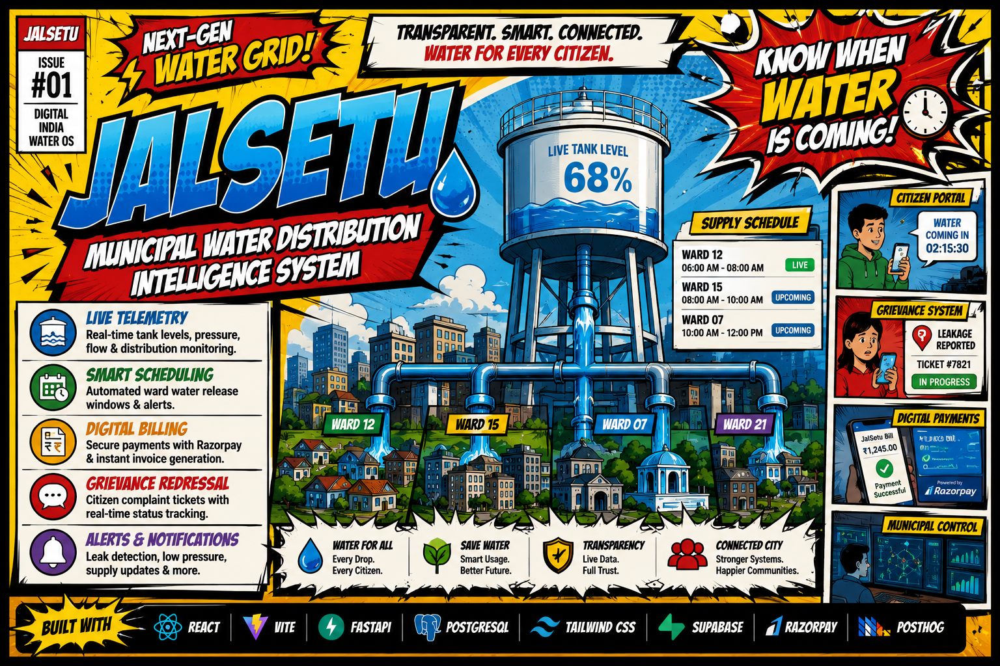
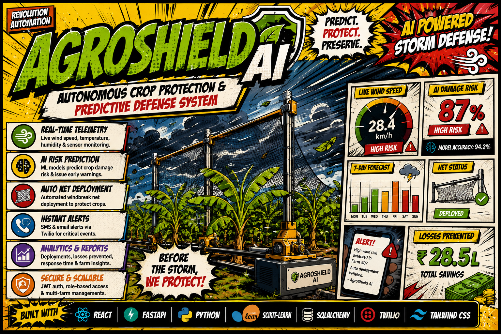
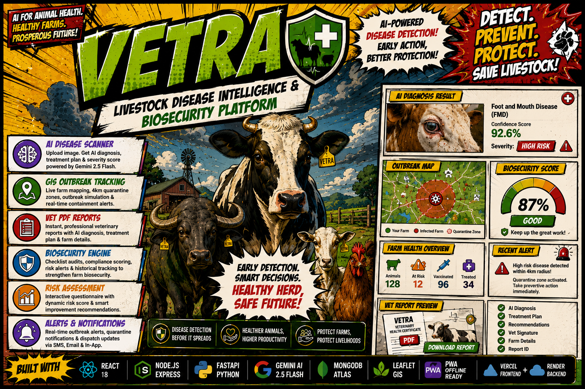
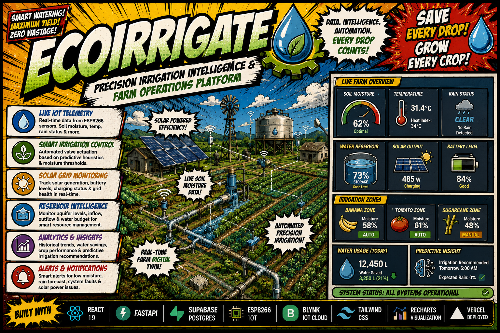

CURRENTLY BUILDING
@OM
Data Science Student | AgriTech Builder 🌾
ABOUT ME
Hi, I'm Om Rajput — a Data Science student and aspiring engineer passionate about solving real-world problems through technology.
My interests lie in agriculture, rural development, software engineering, and data-driven solutions. I enjoy building projects that address practical challenges and create meaningful impact.
I believe technology is most valuable when it helps people, and I aim to use engineering to build solutions that make a difference.
Tech I work with:
MY JOURNEY
Origin Story
Data Science Student
August 2025 — PresentBegan Bachelor's in Data Science, learning how to write clean code, study statistics, and think about software structure.
Digital Panchayat System
Late 2025First major project, built using Java and SQLite. Created a desktop app for local villagers to file complaints and generate report PDFs.
EcoIrrigate — IoT Innovation
Late 2025Second project, combining hardware and software. Built a system using an ESP8266 chip to read soil moisture and show it live on a simple web dashboard.
AgroShield & Vetra — AI/ML Integration
Early 2026Began working with AI and Machine Learning. Made a model to forecast crop weather risks, and used Gemini AI to build an app that checks livestock for diseases.
JalSetu — Civic Infrastructure
Mid 2026Fifth project, a web dashboard for city water management. Added features for scheduling water distribution, managing citizen complaints, and paying bills online.
AgriFlow — Flagship Project
June 2026Designed a web app to help farmers sell crops directly to global exporters. Added a 3D visual map to show shipment stages, which I finished yesterday.
What's Next?
June 2026 — BeyondLearning Docker, basic cloud hosting, and AI agent frameworks to make these systems more reliable and ready for real-world deployment.
PROJECTS
Featured Work
A showcase of my recent projects demonstrating expertise in full-stack
development, modern frameworks, and creative problem-solving.

AGRIFLOW (EXPORT INTELLIGENCE PLATFORM)
A platform that helps farmers sell their crops to global buyers. It keeps track of harvest batches, crop quality grades, available cold storage slots, and exports paperwork so everything is in one place.


AgroShield (Crop Protection & Weather Alert System)
A crop protection app that checks local weather telemetry and uses machine learning to predict environmental risks. It sends alerts and controls physical windbreaks to protect fields from storms.

Vetra (Livestock Disease Diagnosis & Tracking Platform)
An app that helps farmers diagnose sick livestock. It uses Gemini AI to analyze symptoms, shows a map of local disease outbreaks, and tracks safety guidelines to help prevent disease spread.

EcoIrrigate (Smart Irrigation Telemetry Platform)
An irrigation monitoring system that connects physical soil sensors to a web dashboard. It tracks soil moisture, battery levels, and water valves so farmers can see their fields' status remotely.
INTERACTIVE
AgriTech Terminal
BLOG
Field Notes
Stories, learnings, and behind-the-scenes from building tech for rural India.
How I Built AgriFlow from Scratch
The full story — from idea to deployment. Architecture decisions, tech trade-offs, and lessons learned building a complete export management platform.
IoT + Farming: Building EcoIrrigate
Connecting ESP8266 hardware to a React dashboard — how I built a real-time precision irrigation system with solar monitoring and valve automation.
Why I Build for Rural India
The motivation behind every project — growing up in Nashik, seeing farming challenges firsthand, and using code to bridge the tech gap in agriculture.